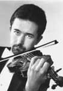

|  |
Violinist David Niwa’s extensive performing career has included appearances with the Chicago Symphony Orchestra, the Columbus Symphony, the Park Ridge Civic Orchestra, the Symphony Orchestra of the Curtis Institute of Music, the Oak Park Symphony, as well as recitals in the Corcoran Gallery, the Terrace Theater of the Kennedy Center, the Cloitre des Jacobins, and Landgraf. He has been featured regularly as soloist with the New York Symphonic Ensemble throughout Japan and Southeast Asia, and annually with the Chamber Orchestra of the Palisades.
An active chamber musician, his engagements include concerts with the Lighthouse Chamber Players, the Roycroft Chamber Music Festival, and the Summer Chamber Music at URI. David is a founding member of the High Street Four, and plays with his sister, Gail, as a member of the Niwa Duo. In 1987 and ‘88, he was guest artist-in-residence at the Festival de la Gesse in southwestern France.
A native Chicagoan, Mr. Niwa began his studies at the age of five. While under the tutelage of his father, Raymond Niwa, he was awarded top prizes in all five divisions of the Society of American Musicians Competition. He was a three-time winner of the ISMTA competition, a winner of the St. Paul Musical Arts Competition, and was awarded scholarships by the Union League
Civic and Arts Foundation. In 1982, Mr. Niwa was a prizewinner in the NFAA Recognition and Talent Search, and in 1985 made his debut on national TV with the Tchaikovsky Concerto on NBC.
Mr. Niwa holds degrees from the Curtis Institute and the Juilliard School, where his teachers were Aaron Rosand and Szymon Goldberg, respectively. His other mentors include Nathan Milstein, Lorand Fenyves, Robert Mann, Samuel Rhodes and Felix Galimir. |